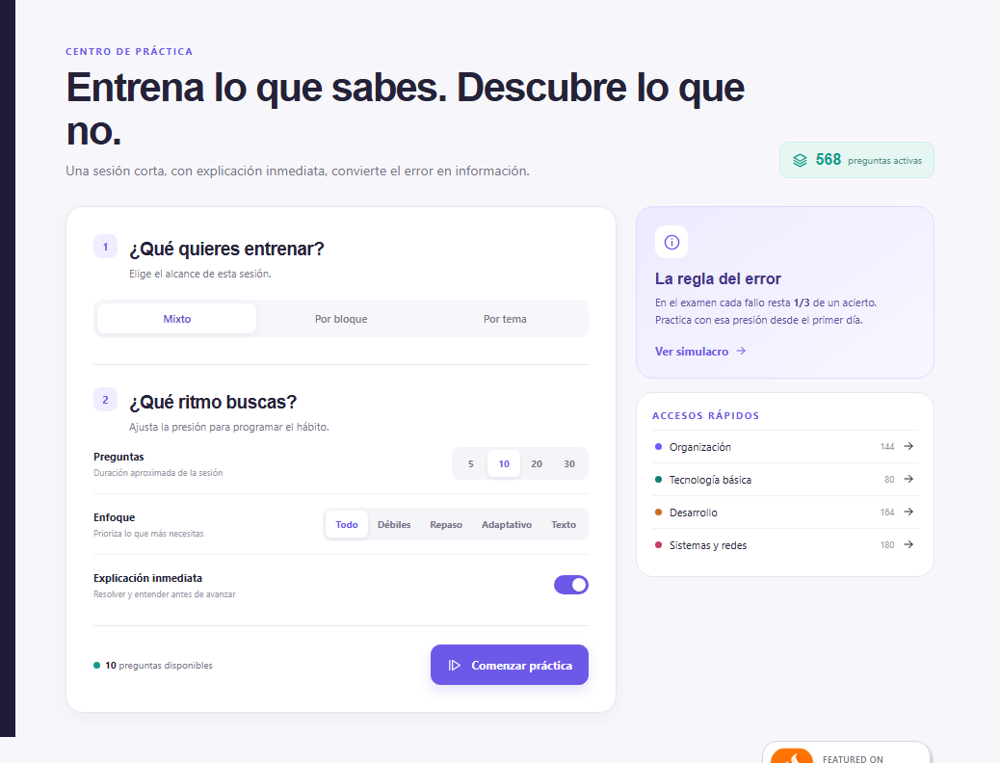

Cómo estudiar TAI AGE con método
Preparar el Cuerpo de Técnicos Auxiliares de Informática de la AGE es más fácil cuando el estudio se convierte en un ciclo medible: entender, practicar, corregir y volver a repasar.
Empezar a practicar Ver los 33 temas

Un ciclo de estudio en cuatro pasos
- Lee con objetivos:Estudia un bloque y anota las ideas que todavía no puedes explicar.
- Practica sin mirar:Resuelve preguntas del tema antes de volver a la teoría.
- Corrige con explicación:No basta con acertar; entiende por qué cada distractor es incorrecto.
- Repasa con calendario:Vuelve a los errores y a los temas débiles después de uno, tres, siete y catorce días.
Alterna bloques y simulacros
El temario TAI incluye Organización y Administración electrónica, Tecnología básica, Desarrollo de sistemas y Sistemas y comunicaciones. Alternar bloques ayuda a comprobar que el conocimiento está conectado y no aislado en una sola sesión.
Cuando domines la práctica por temas, reserva sesiones completas de 100 preguntas para entrenar el ritmo y la penalización de errores. El simulador de Plaza TAI es orientativo y no reproduce preguntas oficiales.
Repaso espaciado: cada cuándo volver
Repasar no es releer. El entrenador programa la vuelta a cada tema según la hayas acertado: si fallas, el nivel baja a cero y vuelve en un día; si aciertas, el intervalo se estira. Estos son los intervalos que usa.
| Nivel del tema | Vuelve a los |
|---|---|
| Acabas de fallar | 1 día |
| Un acierto | 3 días |
| Dos aciertos | 7 días |
| Tres aciertos | 14 días |
| Cuatro aciertos | 30 días |
| Cinco aciertos o más | 60 días |
La consecuencia práctica es que un tema no se estudia una vez: se estudia, se falla, y se vuelve justo cuando estás a punto de olvidarlo. Recorrer los cuatro bloques del temario una sola vez no basta; el sistema te dice cuándo toca volver.
Un plan de dieciséis semanas
Con 33 temas en el programa, el calendario depende de cuántos lleves por semana. Tres o cuatro temas semanales cubren el temario en unas diez semanas y dejan margen para consolidar y para los simulacros.
| Fase | Semanas | Qué se hace |
|---|---|---|
| Cubrir | 1 a 10 | Tres o cuatro temas por semana: leer, contestar sus dieciséis preguntas y corregir los errores |
| Consolidar | 11 a 15 | Repasos programados y práctica concentrada en los temas que el panel marque como flojos |
| Ritmo de examen | 16 y siguientes | Un simulacro completo por semana, con su reparto de tiempo, y repaso de lo fallado |
Si vas justo de tiempo, es mejor cubrir el temario entero con menos profundidad y volver después que dejar bloques sin abrir. Los bloques III y IV llevan además el supuesto práctico, así que son los que más rinden si tu itinerario es técnico.
Usa el método adaptativo
El entrenador adaptativo prioriza preguntas no vistas, errores recientes, temas con menor rendimiento y repasos vencidos. Así puedes convertir una sesión corta en una revisión útil, especialmente cuando no tienes tiempo para estudiar todo el temario.
Antes de empezar
Consulta siempre las bases vigentes y el programa publicado por el BOE y el INAP. El contenido de esta guía es educativo y el banco de Plaza TAI es propio, práctico y no oficial.